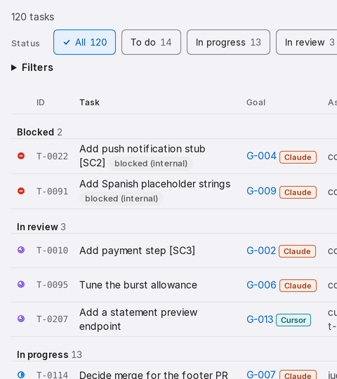

Worked example / Legacy pipeline demo
Follow one goal.
Inspect each handoff.
Trace demo goal G-001 from its acceptance criteria to a pricing-table pull request that needs a second attempt. The fictional record comes from the legacy pipeline, whose boss, lead, coder, reviewer and QA the runner has replaced.
Follow the handoffsThe handoffs
Read the record.
Check the outcome.

-
You + boss
Set the outcome.
Open G-001 and compare the original request with its success criteria.
For the Acme page, the goal calls for a hero section, a pricing table and a working contact form.
Read the goal -
Director + lead
Plan the work.
Inspect the goal’s plan: each feature maps to a task and an acceptance criterion.
Use the links in the goal record to follow the pricing-table task.
Inspect the plan -
Coder
Open a pull request.
Open T-0003 to see the assigned agent, task status and pull request reference.
In the demo, task T-0003 adds the pricing table and opens pull request #102.
Inspect the task -
Reviewer + QA
Check it independently.
Compare the failed first review with the passing review and QA verdicts on the revised change.
The two attempts stay in the history; the failed verdict is not overwritten.
Read the verdicts -
Judge
Make the merge decision.
Read the final decision and compare it with the verdicts. This example uses passing review, passing QA and green CI.
The task history ends with the judge merging the second attempt.
Explore the merge gate